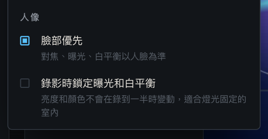

01
Interviews and podcasts
One phone on the host, one on the guest, with an external mic on one of them as the main audio track.
MULTICAM RECORDER
A free, open-source multi-camera tool. Watch every Android phone's live view, set each one's zoom, and press R to start them all at the same moment. Each phone records phone-native video up to 4K and uploads it to your computer while recording.
Latest v0.4.2・Computer: macOS or Windows・Phones: Android 12+・Interface in Traditional Chinese

MultiCam Recorder is a free, open-source multi-camera recording tool that turns the Android phones you already own into synchronized cameras. Open the web dashboard on your Mac or Windows PC to see every phone's live view, set each phone's zoom, and start all of them at the same moment with one key. Each phone records phone-native video locally and streams it to your computer while recording, so you can review it shortly after you stop. Everything stays on your local Wi-Fi: no cloud account, and your footage never leaves your network.
Walk to each phone and tap record; every phone starts at a different moment.
Press R once: the computer syncs clocks with every phone and schedules one shared start.
Illustration: when each phone starts recording, on one shared timeline.
| Each phone on its own | With MultiCam Recorder | |
|---|---|---|
| Starting | Walk to each phone and tap record; starts are seconds apart | Press R once; every phone starts at a scheduled moment |
| Monitoring | You only see the phone in front of you | Live view of every phone on your computer |
| Getting files | Copy and rename each phone's files afterwards | Uploaded while recording, named and verified automatically |
| Status | You notice low battery or storage too late | Battery, temperature, free space and minutes left at a glance |
Whenever you need several angles but don't want to rent cameras and a switcher, the phones you already have will do.

One phone on the host, one on the guest, with an external mic on one of them as the main audio track.
One phone sideways for a 16:9 YouTube video, one upright for 9:16 Reels, Shorts or TikTok, in the same take.
A wide shot from the back and a close-up of the speaker or whiteboard from the side.
Front, overhead and close-up angles at once, with up to 10 phones.
The computer directs, monitors and collects; the phones just record. Every detail is about footage you can use right away.
Press R to start and S to stop every phone. The computer syncs clocks and schedules a common start, then shows the measured offset.
4K, 2K, 1080p or 720p for every phone. Takes run up to 30 minutes, with a warning 3 minutes before the end.
Sideways records 16:9, upright records 9:16. The app follows each phone and locks the orientation while recording.
USB and headset-jack mics are used automatically, and both the app and the dashboard show which mic is active.
About 5 frames per second from each phone for framing. Pressing record always switches every monitor back to the live view.
Presets and a slider for each phone; phones with ultra-wide or telephoto lenses switch lenses automatically.
9:16, 4:5 or 1:1 guides on the phone preview, the live view and the player; the full frame is always recorded.
Battery, temperature, free space, minutes left and transfer speed, plus warnings for low disk space, stalled uploads and lost phones.
Footage uploads while recording; after you stop, only the tail is sent and the file is verified chunk by chunk with SHA-256.
Phones keep recording if Wi-Fi drops, and uploads resume automatically when they reconnect.
Takes go into <recording folder>/<project>, named by time and phone so every angle of a take sorts together.
Star a take and every angle of it is starred together, so the keepers are easy to find in your editor.
Set in and out points while a clip plays; every angle is trimmed together into a new _1 file without re-encoding, and the original is kept.
The trash button on each row removes that take, or clear every unstarred take at once; everything goes to the system Trash, so it can be restored.
Hold one phone sideways for a 16:9 YouTube video and another upright for 9:16 Reels, Shorts or TikTok. Shoot the shorts upright instead of cropping them out of the landscape frame.
Shoot portrait natively:
about 3× the pixels
Same 9:16 frame: a crop from 4K landscape is only 1215×2160, while a phone held upright records 2160×3840. Both frames are drawn to the same scale.
For interviews, podcasts and classes, turn them on in the recording spec menu and every phone follows. Everything runs in the phone's own camera pipeline, so resolution, bitrate and frame rate stay the same.
Focus, exposure and white balance follow faces. With a bright window behind someone, normal auto exposes for the window and the face goes dark; face priority gets the face right first and keeps focus off the background.
In even light with the subject centered, it looks the same as normal auto. Most phones support it; a phone that doesn't records in normal auto mode, and the menu tells you.
Illustration. Drag it to compare.
UnlockedAdjusted all the time, and each phone differently
LockedLocked when you press start, unchanged until you stop
CAM A exposureCAM B exposureWhite balance (color)
Normally a phone keeps adjusting brightness and color: someone walks by or a cloud passes the window and the picture shifts, and two phones shift differently, which makes color matching harder in the edit.
Turn it on and each phone locks the moment you press start, keeping brightness and color until you stop. Best for steady indoor lighting; turn it off outdoors or when the light changes.

Background blur only works on a few phones and has resolution limits, so results were unreliable; filters bake a look into the footage for good. The app records clean, consistent footage, so you can grade every angle at once in your editor.
Both settings are under Portrait at the bottom of the recording spec menu (the interface is in Traditional Chinese).

A local server on your computer serves the dashboard. The dashboard only opens on that computer, not on other devices on the network.
Recording happens on each phone (Camera2 + MediaRecorder), so Wi-Fi never limits image quality; it only carries control and files.
Footage is uploaded over HTTP in chunks. After you stop, both sides compare SHA-256 hashes and resend any chunk that differs.
Copy after recording
After you stop, you still have to copy every phone's footage to the computer and rename it before you can watch.
Upload while recording
After you stop, only the last bit is sent and checked with SHA-256, so it plays right away (roughly 10–20 seconds more for a 30-minute 4K take).
Illustration, not to scale.
The first setup takes about 10 minutes. After that, just run npm start and open the app on each phone.
cd into the multicam-recorder-main folder instead.git clone https://github.com/dean9703111/multicam-recorder.git cd multicam-recorder npm install npm start
When you see 控制台：http://localhost:8787, open http://localhost:8787 in your browser. The setup screen walks you through the recording folder (an external SSD is recommended), pairing and your first project. npm install is only needed the first time; press Ctrl+C in the terminal to stop.

Download MultiCamRecorder.apk from Releases and install it (Android will ask you to allow installing unknown apps). Then click 配對手機 (Pair phone) on the dashboard, scan the QR code with the phone's camera and tap the button on the page that opens. That page also links to the app download. Each phone only needs to be paired once.

<recording folder>/<project>.
The interface is currently in Traditional Chinese. Full documentation, including playback, starring, cleanup and troubleshooting, is in the README on GitHub.
The computer starts and stops recording. The app shows the connection, the recording timer, the mic in use, the zoom and the upload progress, and turns upright when the phone does.


| Price | Free, MIT license |
|---|---|
| Computer | macOS or Windows with Node.js 24+ |
| Phones | Android 12+, up to 10; no iPhone app yet |
| Resolution | 4K (3840×2160), 2K (2560×1440), 1080p, 720p at 30 fps; width and height swap in portrait |
| Format | MP4 (H.264 video, AAC audio), about 40 Mbps at 4K |
| Portrait settings | Face priority (on by default) and exposure/white-balance lock while recording (off by default) |
| Take length | Up to 30 minutes; about 9 GB per phone at 4K |
| Trimming | Heads and tails only, every angle together, saved as new files without re-encoding (requires ffmpeg) |
| Network | Phones and computer on the same Wi-Fi; footage stays on your local network |
| Audio | Built-in mic, or USB and headset-jack external mics |
| Live view | About 5 fps (640×360 landscape, 360×640 portrait) |
| Interface | Traditional Chinese |
Yes. MultiCam Recorder is open-source software under the MIT license. The computer side and the phone app are both free, with no ads, subscriptions or accounts.
Not yet. The phone app is available for Android 12 and later. The protocol between the computer and the phones is public (server/protocol.ts), so other platforms can be added.
Yes. Every push runs an end-to-end test on Windows, macOS and Linux in GitHub Actions with two simulated phones, covering pairing, live view, recording, transfer and verification. It has been used on an Apple Silicon Mac; Windows has not been used with real phones yet, so please open an issue if you hit a problem.
No cloud is involved. Recording and file transfer happen only between your phones and your computer over the same Wi-Fi network, with no account. Footage is saved to the recording folder you choose. You only need the internet to download the app and the program.
No. Each phone records phone-native video locally; Wi-Fi only carries control messages and file transfers. A slow network only makes the transfer take longer, and the rest is sent after you stop.
Streaming sends a live picture to the computer, so quality depends on the network; it suits live streaming. MultiCam Recorder records full quality on each phone and transfers the files, which suits shoots you edit afterwards. It does not live-stream.
Up to 10. More phones need more Wi-Fi bandwidth; two phones recording 4K need about 80 Mbps in total. See the network tips.
Yes. A phone held upright records 9:16 and a phone held sideways records 16:9, and you can mix them in the same take, for example one phone for a long-form video and one for shorts. See how it works.
Face priority, yes; background blur, no. Face priority is on by default, so focus, exposure and white balance follow faces; it works on most phones. Background blur was tried and removed: only a few phones support Android's continuous bokeh mode, it has resolution limits (1080p on Pixel 11 Pro) and narrows the zoom range, so results were unreliable. For a softer background, keep the subject far from the background. See portrait settings.
Yes. Play the take in a monitor, choose Trim, drag the in and out handles on the timeline, and every angle of that take is trimmed together into new files named with _1 (the originals are kept). Nothing is re-encoded, so quality is unchanged; the start snaps back to the previous keyframe, so it may begin slightly earlier. Requires ffmpeg.
No, on purpose. Warm, film or pastel looks and skin smoothing can't be done by the phone's camera pipeline; the app would have to process every frame itself, which makes phones hotter and drains the battery, and bakes the look into the footage for good. The same filter also looks different on phones from different brands. MultiCam Recorder records clean, consistent footage instead, so you can apply one grade to every angle in your editor.
The computer syncs clocks with every phone and schedules a common start time, and the dashboard shows the measured start offset between phones. For frame-accurate alignment, use your editor's audio sync.
The interface is currently in Traditional Chinese only.
Free, open source, no sign-up. Install the app, start the dashboard on your computer and record within ten minutes.